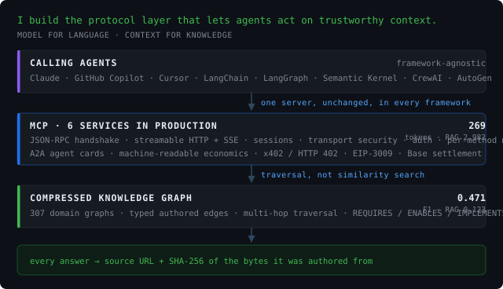

AI Solutions Architect · Forward Deployed Engineer
Context architecture — the layer between an agent and everything it is expected to know. Context routing, and a knowledge layer that traverses instead of guessing.
And the deployed half of the job: the customer's environment, their constraints, the failure modes that never show up in a demo.
Minneapolis, MN · Open to remote · AI Solutions Architect, Forward Deployed Engineer, Agentic AI Architect

Three layers, built end to end. Context routing decides which knowledge an agent gets, how deep, what it is entitled to and what it will cost — before it spends anything. The knowledge layer beneath it is typed and traversable rather than chunked and embedded, so an answer is a path through declared relationships, not a reconstruction from similar-looking text.
Fifteen years of enterprise architecture, the last of them spent building this end to end — protocol, provenance, payment and the benchmark that says whether any of it actually works.
Most of what follows is public and re-runnable. The benchmark can be cloned. The agent cards answer a curl. That is deliberate: claims about AI systems should be checkable by the person reading them.
RAG chunks prose and retrieves by embedding similarity, which throws away the relationships. A CKG stores relationships as typed, authored edges and traverses them. Every answer traces to a source URL and a SHA-256 of the bytes it was authored from.
| CKG | RAG | GraphRAG | |
|---|---|---|---|
| macro-F1 | 0.471 | 0.123 | 0.120 |
| tokens per query | 269 | 2,982 | — |
| F1 at 5-hop depth | 0.772 | 0.170 | — |
44 domains, 7,758 queries, locked at v0.6.2. The last row is the one that matters — the advantage grows with question complexity, because multi-hop composition is where embedding methods are weakest.
Clone the benchmark and re-run it → · Dataset on Hugging Face (CC-BY-4.0)
The repo includes a reconciliation document correcting my own published cost figures — an earlier version priced CKG and the baselines against different models, which inflated the ratio. Numbers I can't defend are worse than no numbers.
Every MCP server I run publishes an A2A agent card stating its own economics, so a calling agent can decide whether invoking is worth it before it commits anything.
curl -s https://ckg-nvidia-ai.onrender.com/.well-known/agent-card.json | jq .economics{
"price_usd_per_call": 0.010,
"mean_tokens_returned": 269,
"baseline_mean_tokens": 2982, // RAG over the same corpus
"tokens_saved_per_call": 2713,
"breakeven_input_price_usd_per_mtok": 3.69,
"decision_rule": "…pays for itself on token cost alone when your
input price exceeds $3.69 per million tokens.
Below that, invoke only when quality matters."
}That last field is the point: it tells you when not to call it. A card that claims savings at every price is one a good agent should distrust.
Tool and output schema design · JSON-RPC initialize handshake · streamable HTTP and SSE transport · session management · DNS-rebinding transport security · per-method metering · rate limiting · MCP-native observability.
Built, shipped and debugged in production — including the failure modes that don't show up on a dashboard.
Agent cards advertising skills, auth, payment terms and machine-readable economics · x402 / HTTP 402 · EIP-3009 signed authorizations · Coinbase CDP facilitator · Base settlement · ERC-8004 agent identity.
The commerce layer agents will need once they start calling each other without a human in the loop.
The same servers register unchanged in Semantic Kernel, LangChain, LangGraph, AutoGen, CrewAI, GitHub Copilot, Claude and Cursor. Integration happens at the protocol layer, so framework choice stays the caller's decision.
# Microsoft Semantic Kernel consumes an MCP server directly — no bridging code
from semantic_kernel import Kernel
from semantic_kernel.connectors.mcp import MCPStreamableHttpPlugin
async with MCPStreamableHttpPlugin(
name="ckg", url="https://ckg-nvidia-ai.onrender.com/mcp"
) as plugin:
kernel = Kernel()
kernel.add_plugin(plugin, plugin_name="ckg") # 9 tools → kernel functions12 packages on PyPI across 100+ releases · full catalog at pypi.org/user/danyarm
Seven variants, same verified history, each written for a different role. .docx parses more reliably in applicant tracking systems; the PDF is the one to read.
LinkedIn · GitHub · PyPI · Hugging Face · Graphify.md